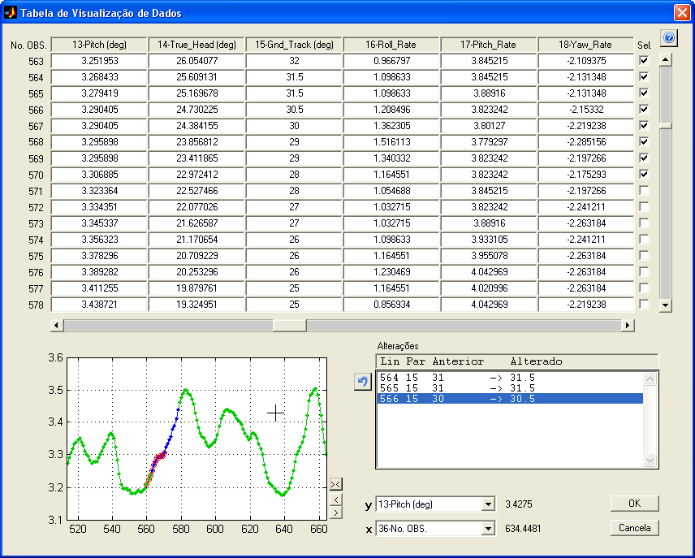
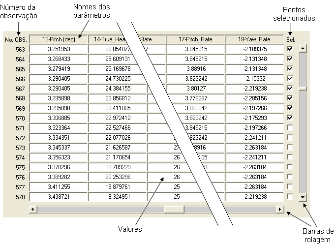
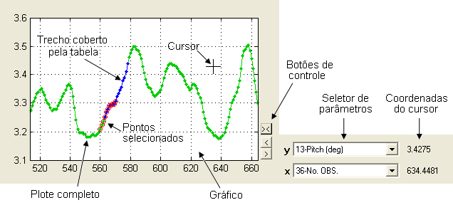
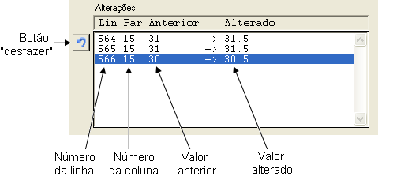

| Menu Ferramentas |
|
Essa ferramenta
consiste de uma
tabela onde o usuário pode visualizar os valores numéricos dos dados
das
matrizes de trabalho, além de alterar os valores e a seleção dos
pontos. Um pequeno
gráfico permite visualizar as alterações, que são listadas para melhor
controle.
Para acessar a
Tabela, clique em
“Ferramentas ► Visualizar Dados em Tabela” ou no botão na
Barra de Ferramentas.

|
Nota: A Tabela de
Visualização de Dados requer resolução mínima
de 1024 × 768 pixels e não executará em resoluções menores. |
Descrição
A Tabela de
Visualização de Dados possui as seguintes
áreas:
Tabela de Dados
Apresenta os
valores numéricos dos
dados, distribuídos cronologicamente de cima para baixo e com um
parâmetro por
coluna.

O número
sequencial de cada
observação é apresentado à esquerda, na coluna “No. OBS”.
Os nomes dos
parâmetros são
apresentados na linha superior.
Os pontos
selecionados são
representados pela marcação na coluna “Sel.”, à direita.
As barras de
rolagem vertical e
horizontal são usadas para percorrer toda a extensão da tabela.
Gráfico
Apresenta
graficamente o estado
atual de um dos parâmetros tabela.

Os campos “x” e
“y” permitem
selecionar um par de parâmetros para visualização.
O plote
verde representa a extensão completa dos parâmetros selecionados.
O plote
azul representa o trecho coberto pela tabela (até 16 observações), que
é
atualizado quando a barra de rolagem vertical é usada.
Os pontos
selecionados são
apresentados com um círculo vermelho.
Os botões de
controle permitem
centralizar no trecho coberto pela tabela e deslocar o gráfico para
esquerda e
direita.
As coordenadas
do cursor são
apresentadas à direita, quando o mesmo estiver posicionado sobre o
gráfico.
Caso o
parâmetro selecionado em x
for reconhecido
como tempo, sua coordenada será apresentada na forma
HH:MM:SS.MS.
O mouse pode
ser usado para
controlar o zoom do gráfico da mesma forma que na janela principal do
R_DAT.
Lista de
Alterações
Apresenta todas
as modificações
realizadas na tabela, permitindo ao usuário “desfazer” as alterações
não
desejadas.

A coluna “Lin”
apresenta o número da linha (observação) em que a alteração foi
realizada.
A coluna “Par”
apresenta o número
da coluna (parâmetro) em que a alteração foi realizada.
A coluna
“Anterior” apresenta o
valor anterior à modificação.
A coluna
“Alterado” apresenta o
valor após a modificação (valor
inserido).
O botão
“Desfazer” permite desfazer
as alterações selecionadas na lista.
Operação
Para localizar
um trecho na tabela:
- Use as barras de rolagem da tabela.
- O plote
azul acompanhará o trecho coberto
pela tabela.
Para alterar o
zoom do gráfico:
- Para aproximar: Use o mouse para definir o intervalo
desejado,
clicando duas vezes com o botão esquerdo.
- Para afastar: Clique com o botão direito do mouse sobre
o gráfico.
- Para restaurar o zoom,
exibindo toda a extensão dos dados: Dê um duplo-clique com qualquer
botão do
mouse sobre o gráfico.
Para deslocar a
abscissa do gráfico (eixo x):
- Use o botão  para
deslocar o gráfico 20% para a esquerda.
para
deslocar o gráfico 20% para a esquerda.
- Use o botão  para
deslocar o gráfico 20% para a direita.
para
deslocar o gráfico 20% para a direita.
- Selecione o botão para
que o gráfico centralize e acompanhe o
trecho coberto pela tabela (em azul).
Para alterar a
seleção dos pontos:
- Para selecionar um ponto, marque a caixa se seleção
correspondente na
coluna “Sel.”, à direita da tabela. Para desselecionar,
desmarque a caixa correspondente.
- A seleção pode ser visualizada no gráfico, pelos
círculos vermelhos.
Para alterar um
valor na tabela:
- Localize e selecione o elemento desejado e insira
manualmente o novo
valor. É possível inserir uma fórmula que possua resultado numérico,
mas não é
possível referenciar outros elementos da tabela. O parâmetro “No. OBS.”
não
pode ser alterado.
- A alteração será listada na Lista de Alterações.
Para desfazer
alterações:
- Selecione as alterações não desejadas na Lista de
Alterações. É
possível selecionar múltiplas linhas usando o mouse e os botões “Shift” e “Ctrl”
do teclado.
- Clique no botão para
desfazer as alterações selecionadas.
Sair
Para confirmar
as modificações realizadas,
clique no botão “OK” e confirme. A matriz DADOS será atualizada.
Para descartar
as modificações,
clique no botão “Cancela”.
| |
Correção por pontos de controle |
Reprodução do voo |
|